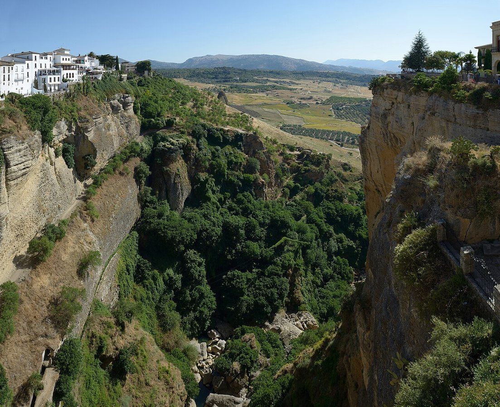
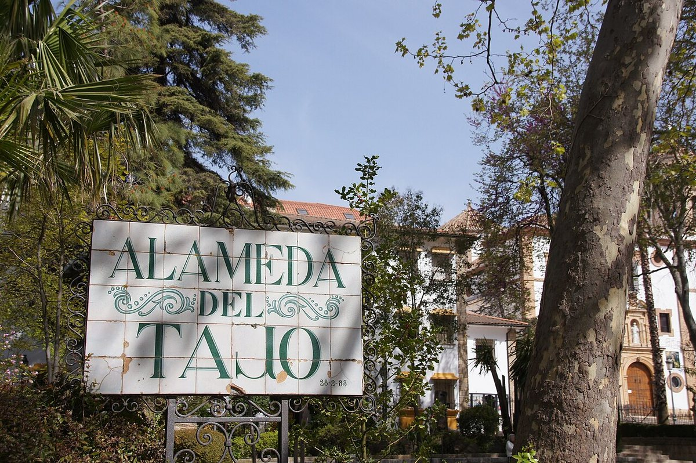
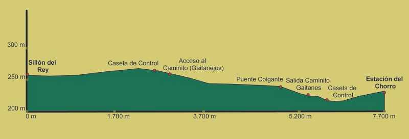
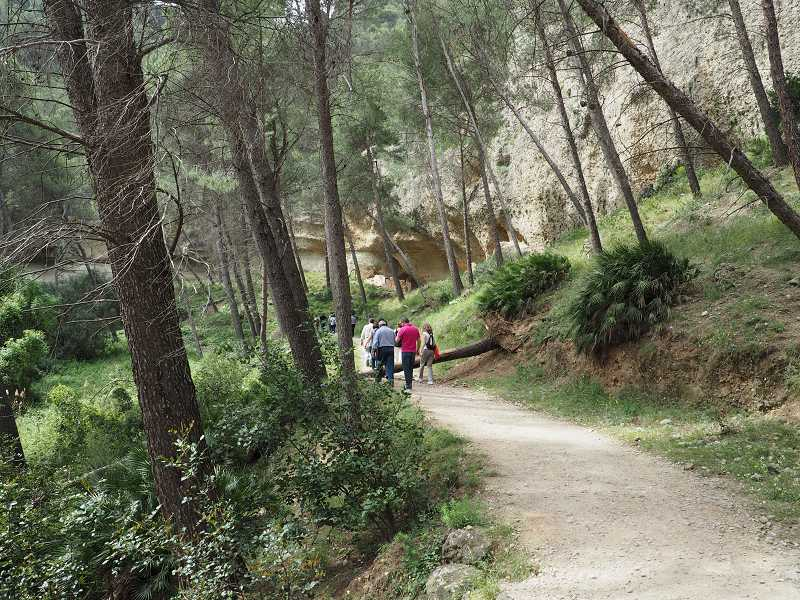
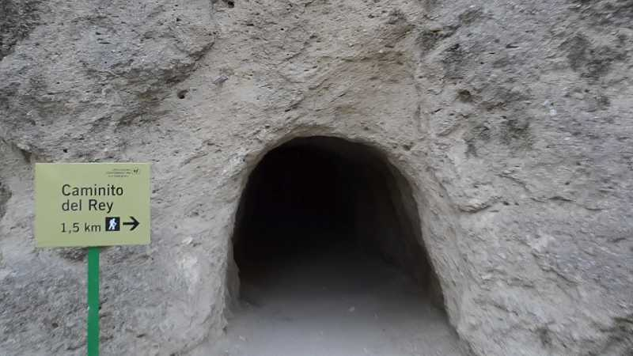
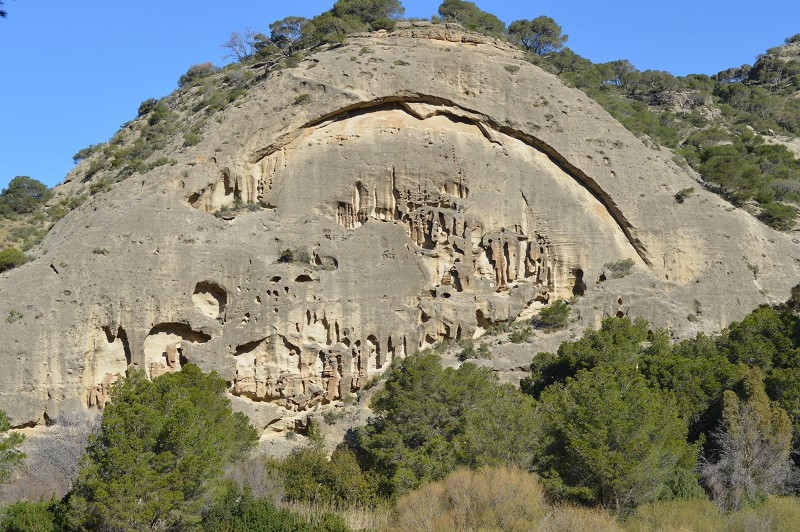
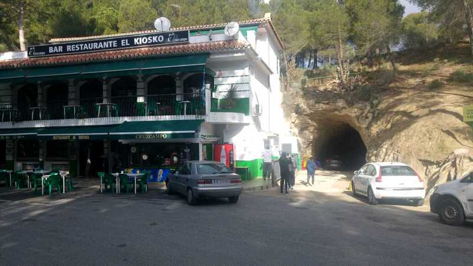

Renee, Per, Lukas, Chloe and Olivia are gathering in southern Spain for a relaxed family trip with a car, pool time and easy day trips.
SNA→AGP→Nerja→Portugal
Trip at a glance
Who travels when
Tue Aug 25Renee, Per & Lukas fly SNA → EWR → AGP.
Wed Aug 26Core group checks into Royal Palm 22 in Nerja.
Thu Aug 27–Fri Aug 28Chloe & Olivia travel SAN → ORD → DUB → AGP after a reroute; they are expected at Málaga Airport around 5:00 PM Friday. Per will pick them up and drive them to Nerja.
Aug 28–Sep 4Shared Nerja base: pool, beaches, food and optional day trips.
Sat Sep 5Olivia & Chloe planned for AGP → SAN; Lukas has a separate return. Renee & Per continue to Portugal.
Quick reference: The structured flight cards are the itinerary. Original screenshots are kept below as reference captures and should be checked against the airline app.
UA661 · SNA → EWR6:45 AM → 3:10 PM · Aug 255h 25m · Boeing 737-700 · seats Per 7A, Lukas 7B, Renee 7C
UA350 · EWR → AGP5:50 PM → 7:35 AM +1 · Aug 25–267h 45m · seats Per 9A, Lukas 9B, Renee 9C
United confirmation: C5PNZ6. The saved itinerary shows the core group traveling together from Orange County.
Open original United confirmationReference capture · SNA → Newark → Málaga
Revised arrival · Friday, Aug 28
Chloe & Olivia to Málaga
Revised route · SAN → ORD → DUB → AGPExpected arrival around 5:00 PM · Friday, Aug 28Exact flight numbers and seats: confirm in the airline app
Travel update: Aircraft maintenance and weather delays forced a reroute from San Diego (SAN) via Chicago (ORD) and Dublin (DUB) before Málaga. Per will meet Chloe and Olivia at AGP around 5:00 PM, then drive them to Nerja for a low-key evening.
Open original split-arrival scheduleReference capture · original SAN → Newark → Málaga plan, superseded by the reroute
Base · Aug 26–Sep 5
Royal Palm 22 · Nerja
A three-bedroom penthouse with a shared pool and sea views is the current family base. The booking shows five guests for ten nights.
Save the TouchStay guest guide for the complete arrival instructions. The key-safe operating steps and property directions are summarized here for offline use; the actual key-safe code and Wi‑Fi password remain in TouchStay/private notes.
Property address
Royal Palm Nerja, Avenida Chimenea, 2 · 29780 Nerja
Wi‑Fi
Free Wi‑Fi is available. Retrieve the current network credentials from TouchStay.
Parking
The barrier remote is with the Smile House Rentals key set. Park in any available spot.
Directions
Use the map, select the blue house, choose “Get directions,” then enter your starting point.
Key-safe steps · code kept private
Enter the private key-safe code and press the open button to retrieve the keys. To return or close the safe, press the middle clear button, enter the code again and hold the open button. If an entry is wrong, press clear and start over. Return the keys to the safe whenever leaving the property.
Code location: Use the TouchStay guest guide or private notes for the current code; it is intentionally not copied into this public website.
Full-size Ford Tourneo Connect or similar for the full stay. The reservation is under Per Johansson.
Confirmation
L6324461737
Total
€536.72
Pickup
Málaga Airport Wed Aug 26 · 8:00 AM
Return
Málaga Airport Sat Sep 5 · 8:00 AM
Saturday timing: Leave Nerja at 6:00 AM, allow about an hour to the airport, refuel and return the car by 8:00 AM before heading to the international terminal.
Wed Aug 26Collect the rental car at Málaga Airport at 8:00 AM, drive to Nerja, settle in, find the Casa Mimosas pool FOB in the drawer by the kitchen table, groceries and pool time.
Thu Aug 27Preparation day: beach supplies, local orientation and a relaxed Nerja evening.
Fri Aug 28Take the compact 1:00–4:15 PM Málaga walk, then collect Chloe & Olivia at AGP around 5:00 PM after their SAN–ORD–DUB reroute. Drive to Nerja and keep the evening easy.
Sat Aug 29Possible airport-pickup + Ronda day if Chloe & Olivia are collected Saturday; otherwise Burriana Beach with reserved cabanas or Balinese beds.
Sun Aug 30 · LOCKEDCaminito del Rey is booked and locked in: guided visit at 3:40 PM. Be at Visitor Reception Centre parking by 2:40 PM.
Mon Aug 31Ronda fallback / overflow day if the Saturday airport-pickup option is not practical; otherwise use this as recovery after Caminito.
Tue Sep 1Open Nerja day: Cueva de Nerja, beach, pool or an easy town day.
Wed Sep 2Recovery day at the property, pool or spa.
Thu Sep 3Optional Cueva de Nerja, another beach day or Granada and the Alhambra if tickets and energy line up.
Fri Sep 4Final pool or beach day, packing and a final dinner.
Sat Sep 5Leave Nerja at 6:00 AM for Málaga Airport; refuel and return the rental car before the international flights.
Friday, Aug 28 · 1:00 PM start · before 5:00 PM AGP pickup
Málaga highlights · compact walking loop
Park at Aparcamiento Camas, a 24-hour municipal garage near Mercado de Atarazanas, then keep the visit compact and entirely walkable. The loop fits food, old Málaga, Moorish history and the waterfront before the airport pickup.
Best call: make the Alcazaba the one must-do. Skip the climb to Castillo de Gibralfaro today—it is worthwhile, but not with this time window and August heat.
1:00 PM · Mercado de AtarazanasStart at the seafood, jamón, cheese and produce stalls. Have a quick tapa and a caña instead of a full lunch; you will still have time before the 3:00 PM market closing.
1:20 PM · Old TownWalk Atarazanas → Calle Larios → Plaza de la Constitución → Cathedral. Take a few of the smaller lanes rather than staying only on Calle Larios.
1:50 PM · Málaga CathedralSpend about 30 minutes inside Santa Iglesia Catedral Basílica de la Encarnación, nicknamed La Manquita (“the one-armed lady”) because its second tower was never completed.
2:25 PM · AlcazabaAllow roughly an hour for the 11th-century Moorish palace-fortress overlooking the city and port.
3:25 PM · Roman Theatre & Málaga ParkSee the theatre directly below the Alcazaba, then follow the shaded park toward the waterfront.
4:00 PM · Muelle UnoFinish beside the marina with a quick cold drink, then walk back through the center to Parking Camas.
4:15 PM · Leave for AGPDrive to Málaga Airport and be ready to meet Chloe and Olivia around 5:00 PM after their SAN → ORD → DUB → AGP reroute.
Route: Atarazanas → Calle Larios → Cathedral → Alcazaba → Roman Theatre → Málaga Park → Muelle Uno → Parking Camas → AGP. It is roughly 3½ hours on foot plus the airport drive.
Probably Nerja’s best all-around beach for this group: an easy walk downhill, plenty of restaurants and water activities. The walk home is uphill, and peak-season parking can be difficult.
Reserve cabanas, hammocks or a Balinese bed ahead of time if available. Breakfast at Nybakat Café is a priority.
Keep this day flexible after Caminito: park in the city garage and explore at an easy pace with Balcón de Europa, Plaza España, the old town, a possible spa visit or an easy Cueva de Nerja stop.
Saturday, Aug 29 or Monday, Aug 31 · flexible must-see
Ronda · airport pickup option
If Chloe and Olivia are collected at Málaga Airport on Saturday, Ronda can become the day’s scenic stop before continuing to Nerja. This is a long day, so keep Monday as the fallback if the airport timing, luggage or flight arrival makes it too rushed.
Suggested timing: allow about 2 hours from Nerja including the drive and parking. The sightseeing loop itself is roughly 2–3 miles of easy walking, with stairs and uneven cobblestones around the gorge.
7:30 AM · Leave NerjaDrive inland before the day warms up. Park once near Plaza del Socorro or the old town.
9:30 AM · Puente NuevoStart with the bridge, Tajo gorge viewpoints and the small interpretation center inside the bridge.
10:45 AM · Alameda del TajoWalk the shady promenade and continue to Mirador de Aldehuela for the classic gorge view.
12:00 PM · Old townWander Plaza Duquesa de Parcent and the surrounding historic lanes.
1:00 PM · LunchTake a proper break in the old town rather than rushing between monuments.
2:30 PM · Plaza de TorosSee the 1785 bullring and museum; check the current timetable before leaving Nerja.
3:45 PM · Optional lower loopChoose the Arab Baths and Puente Viejo only if everyone still has energy.
5:00 PM onwardReturn to Nerja, or add Mondragón Palace if the group prefers another indoor stop.

Puente Nuevo and the Tajo gorge · photo by Wolfgang Moroder, Wikimedia Commons

Alameda del Tajo · photo by Fredrik Rubensson, CC BY-SA 2.0
Puente Nuevo · the essential stop
The 18th-century bridge spans the Tajo gorge and is Ronda’s signature viewpoint. Expect dramatic drops, busy photo spots and a short museum visit inside the bridge.
This is the easiest scenic portion: a tree-lined park beside the bullring followed by cliff-edge viewpoints. It is ideal for photos and a short reset before lunch.
Use the square as the old-town anchor, then explore the surrounding lanes and Santa María la Mayor if it is open. This is a good place to slow down for coffee or lunch.
The historic 1785 ring is a compact indoor visit and a good hot-afternoon option. The official February 2026 timetable lists daily hours of 10:00 AM–6:00 PM; hours and prices can change, so verify before the trip.
Optional: Arab Baths, Puente Viejo & Mondragón Palace
These are worthwhile extensions, but they add stairs and a lower riverside walk. The Arab Baths are especially atmospheric; Mondragón Palace is the better choice if the group wants courtyards and shade.
The Caminito del Rey trip is booked and locked in for a guided visit at 3:40 PM. The route is linear, so allow time for the drive from Nerja, Visitor Reception Centre parking, access trails and the return shuttle.
All five personal tickets are booked and locked in for the guided visit. The new parking/access ticket and English rules document are in the same iCloud folder rather than exposed on the public website.
iCloud folder: Spain / Caminito del Ray Tickets
Arrival target: Be parked at Visitor Reception Centre by 2:40 PM - one hour before the 3:40 PM booking. Parking is listed as €2/day; confirm availability and the ticket’s parking inclusion in iCloud.
Access rules: Arrive at least 30 minutes early, or one hour early when using Visitor Reception parking. Bring each dated ticket and matching ID/passport. Wear secure hiking shoes; no flip-flops, large backpacks, selfie sticks, strollers, drones, pets or tripods. Children under 8 are not admitted.
Shuttle: The walk is approximately 1.5–2 hours. Return helmets at El Chorro, then use the shuttle back; the bus takes about 15–20 minutes, runs approximately 7:50 AM–7:00 PM, costs €2.50 per person and requires cash - card payments are not accepted.
Offline route guide · official access page
What to expect on the Caminito
The official route is a linear, one-way walk from north to south, starting in Ardales and finishing at El Chorro in Álora. Plan on about 8 km and 3–4 hours including the approach trail, boardwalks and the final walk to the station.
Access 1 · Túnel GrandeAbout 2.7 km / 50 minutes through the Gaitanejo trail. This is the longer approach beside El Kiosko.
Access 2 · pedestrian tunnelAbout 1.5 km / 20–25 minutes. It shortens the approach to the reception booth and official-route start.
At the reception boothValidate tickets, collect helmets, pass the footwear/equipment check and join the group briefing before the official route.
Route highlightsGaitanejo Gorge, dams and cave houses, El Soto, Tajo de las Palomas, Valle del Hoyo, the Gaitanes Gorge boardwalks and the final 2.1 km descent toward El Chorro.
Practical plan: Follow the signs from the Visitor Reception Centre, keep the ticket and ID accessible, carry water and a small snack, and leave time for the return shuttle from El Chorro to the car park. Expect tunnels, forest trail, exposed boardwalks, stairs, gorge views and possible vultures or other birds.

Official route profile · access, boardwalks and El Chorro finish

Forest approach trail · official Caminito image

Pedestrian-tunnel approach · 1.5 km / about 20–25 minutes

Gaitanejo landscape and cave formations · official Caminito image

El Kiosko and Túnel Grande access · official Caminito image
If the Saturday airport-pickup option does not work, use Monday for the full Ronda day. Otherwise keep it intentionally light after Caminito: sleep in, use the pool, visit the spa or take a short walk.
The Caves of Nerja are the easier local option. Granada and the Alhambra are lower priority because the group has already visited, but they remain possible if tickets and energy line up.
Leave Nerja at 6:00 AM for the international flights. Allow about an hour to Málaga Airport, then refuel and return the rental car before heading to the terminal. Chloe, Olivia and Lukas are scheduled to head back to the United States on Sep 5. Renee and Per leave Spain the same day to meet Peter and Junko in Portugal.
Important passenger note: AGP → SAN is for Olivia and Chloe only. Lukas has his own return booking and should not be grouped into that segment.
UA1988 · Newark (EWR) → San Diego (SAN)4:59 PM → 7:53 PM · Sep 55h 54m · saved schedule reference
Passenger assignment: the plan is Olivia + Chloe on AGP → SAN; Lukas has a separate return. Reconcile any older seat names in the saved screenshots with the current United app.
Open original return scheduleReference capture · verify passenger assignment before travel
Lukas · Saturday, Sep 5
Lukas returns to Orange County
UA351 · Málaga (AGP) → Newark (EWR)9:35 AM → 12:10 PM · Sep 58h 35m · Boeing 757-200 · United Economy (XN) · seat 35D
Connection: 2h 25m at Newark (EWR).
UA1847 · Newark (EWR) → Orange County (SNA)2:35 PM → 5:24 PM · Sep 55h 49m · Boeing 737 MAX 8 · United Economy (XN) · seat 30C
Passenger assignment: This is Lukas’s separate return booking. Keep it distinct from the Olivia + Chloe return card above.
Offline-ready
Keep the family plan handy
The Spain app caches the itinerary, route map, local photos and the TouchStay arrival summary for the installed iPhone web app. Caminito ticket PDFs and private access credentials are kept in iCloud/TouchStay instead of being published here. Open the app once while online before departure so the latest version and service-worker cache are installed.
Still download separately: iCloud ticket files, TouchStay’s live guide, Apple Maps offline areas, airline boarding passes and any external restaurant, property or Instagram pages. External links need a connection unless saved in their own apps.


{kind=link}
{kind=link}